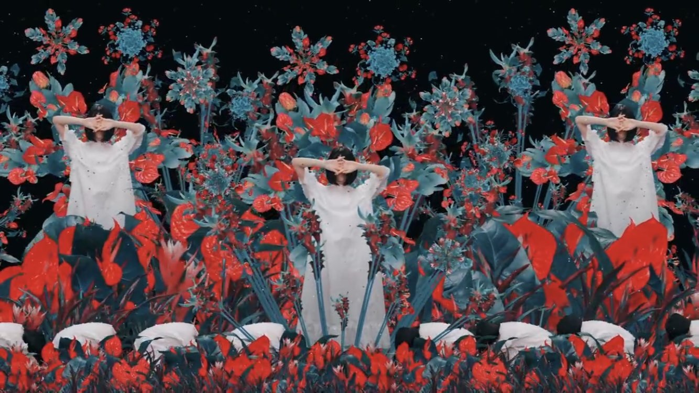

2018/1106TueFUJIBAKAMA
22枚目シングル特典映像の
予告編が公開されました！
今回は、
稲葉秀樹さんに撮っていただきました☺︎
実は撮影がずっとスタジオで後から映像を
のせるということで出来上がりが楽しみで、
予告編を見たら想像以上の広大さと
幻想的な雰囲気で嬉しかったです
本編を見たらよりわかるかと思いますが
稲葉さんが、私の感情や人生に
基づいたストーリーを考えてくださり
1つ1つの動きや表情に
今の私を込めさせていただきました


暗闇もあれば光もあり
水もあり花も咲き、
目まぐるしく変わってゆく自分と周りの環境
喜びもあれば悲しみや憎しみもある毎日で、
自分の気持ちと起こりうる出来事からは
逃げられない
だからこそ大切に、目の前と
向き合っていきたい気持ちです
プレッシャーや挫折
たくさんの恐怖や不安がたくさんの手になり
襲われ 自信を無くし
自分が少しずつ遠のくような寂しい気持ちの中、
新たな希望や目標、夢を見つけた時に
花を受け取りまた歩き出します
振り返ってみると何があるか分からず
暗闇に溶けてゆくようなどん底も
花や光に包まれ眩しいくらいの幸福も
この22年間で感じた感情
もちろん今は乃木坂46の堀未央奈として
私なりに道を探し前向きに
前へと歩き続けています
今の私にしか表現できない
ありのままの私を
繊細にダイナミックに
映像で写しあげてくださったので
ぜひ、たくさんの方にフルサイズを
観ていただきたいです☺︎
途中出てくるダンスは
即興で私が作りました
イカみたいな動きなので、
名付けてイカダンス。

咲き続け！
2018/11/06 20:36
コメント(387)
いやもうシンプルに未央奈ちゃんの文章が好き。
ほりっぴ～、ナンチです♪
ブログ更新ありがとう～
ほりっぴ～の想いを受け止めながら、フルサイズを観たいと思ってるよ
ブログ更新ありがとう～
ほりっぴ～の想いを受け止めながら、フルサイズを観たいと思ってるよ
幻想的な世界観だね
フルサイズ楽しみ！
フルサイズ楽しみ！
個人PVの予告見て未央奈の頭の中はこんな風になってるのかなぁとか思って見ました。
あながち間違ってはいなかったみたいですね！
フルも絶対見るよー！
あながち間違ってはいなかったみたいですね！
フルも絶対見るよー！
一見するとホラーチックだったけど次第にメッセージ性を帯びていることに気づいた！
これから年末年始は未央奈ちゃんにとって飛躍の期間ともなることを暗示している様だったよー！
早速明日はノリさんに見せてあげないとね(^^)
これから年末年始は未央奈ちゃんにとって飛躍の期間ともなることを暗示している様だったよー！
早速明日はノリさんに見せてあげないとね(^^)
こんばんはんばーぐ大好き未央奈さん。
ブログ更新ありがと！
FUJIBAKAMA観たよ！✨
予告編だから良いところで終わっちゃうのね！
うぅー、、早く全部観たい。
すごい内容だよね。人は未央奈以外誰もいないしサウンドも割と小さくて完全に未央奈が世界の中心にいたね。だからこそ今の未央奈の演技力とかダンスとかの表現力がはっきりと伝わってくる作品だった！
撮影してる写真から察するに、あとから映像をのせたってことは撮影のときは何も周りにセットがない状態で演じたってことだよね。すご。またしても挑戦だね。
ストーリーの解説ありがとー！！
あー！目まぐるしく変わってゆく自分と周りの環境を、花をくるくる回すことによって表現してたのかぁ。ふむふむ。
目の前の人や物事を大切にして向き合うって未央奈そのものやね。
でたー！たくさんの手！うまい表現。
そこでFUJIBAKAMAの登場なんだね！
早くフルサイズが観たい〜〜
イカダンス。笑った。
即興なんだ！笑
あのダンスによって更に深く不思議な世界観に魅かれていくんよね。笑
そうそう。FUJIBAKAMAについて調べたら藤袴の花は一斉に咲かずに長い時間をかけて少しずつ順番に咲いていくみたいだね。なんか1歩1歩挑戦して前に進んでる未央奈みたい。って思ったけどそこらへんも考慮してFUJIBAKAMAってタイトルなのかな。(^-^)
さて。
乃木坂46の堀未央奈さん。
これからも君らしくがんばれーい！☺︎
咲き続け！
応援してるよん♪
おやすみおな〜〜
ブログ更新ありがと！
FUJIBAKAMA観たよ！✨
予告編だから良いところで終わっちゃうのね！
うぅー、、早く全部観たい。
すごい内容だよね。人は未央奈以外誰もいないしサウンドも割と小さくて完全に未央奈が世界の中心にいたね。だからこそ今の未央奈の演技力とかダンスとかの表現力がはっきりと伝わってくる作品だった！
撮影してる写真から察するに、あとから映像をのせたってことは撮影のときは何も周りにセットがない状態で演じたってことだよね。すご。またしても挑戦だね。
ストーリーの解説ありがとー！！
あー！目まぐるしく変わってゆく自分と周りの環境を、花をくるくる回すことによって表現してたのかぁ。ふむふむ。
目の前の人や物事を大切にして向き合うって未央奈そのものやね。
でたー！たくさんの手！うまい表現。
そこでFUJIBAKAMAの登場なんだね！
早くフルサイズが観たい〜〜
イカダンス。笑った。
即興なんだ！笑
あのダンスによって更に深く不思議な世界観に魅かれていくんよね。笑
そうそう。FUJIBAKAMAについて調べたら藤袴の花は一斉に咲かずに長い時間をかけて少しずつ順番に咲いていくみたいだね。なんか1歩1歩挑戦して前に進んでる未央奈みたい。って思ったけどそこらへんも考慮してFUJIBAKAMAってタイトルなのかな。(^-^)
さて。
乃木坂46の堀未央奈さん。
これからも君らしくがんばれーい！☺︎
咲き続け！
応援してるよん♪
おやすみおな〜〜
未央奈～こんばんは！
ぽてとです！
PV見たよ！
未央奈の世界観が出てた気がする♪
本編が楽しみ！
ぽてとです！
PV見たよ！
未央奈の世界観が出てた気がする♪
本編が楽しみ！
前言ってた美容ブログで今使ってる物と前まで使ってたものも含めて、香水やボディクリームについて教えて欲しいです。自分は男なのですが彼女にクリスマスにその二つをプレゼントしたいので参考にさせて下さい。楽しみにしてます。
発売日が楽しみになったよ！
未央奈ブログ更新ありがとう
個人pv独特な世界観だね
早くフルで見たい！
個人pv独特な世界観だね
早くフルで見たい！
なんか独特の世界観というかみおならしくていいMVだなって思った笑
独特だけどちゃんと意図が理解できるから尚いいんだよね〜
みおなにしかできないMVですわ
独特だけどちゃんと意図が理解できるから尚いいんだよね〜
みおなにしかできないMVですわ
映像の綺麗さだったりストーリー性、本編を見れる日が待ち遠しい!!! そして、何より堀ちゃんのいろんな表情だったりイカダンスも再度しっかり本編で見てみたい(*￣▽￣*)
みおたん、お疲れ様です！
シュールなPVですね！
ロングバージョンが楽しみです！
タコダンスじゃなくて、イカダンス！笑
素敵なダンス！
みおたんの好きな焼き芋！
隣町のスーパーで108円で売ってて、
食べたけど、超美味くて、何回も食べました！
今年最後のキノコ採りに行ってきます！
まだあるかなあ！
今週末に仲間でキノコの食べ会をします！
しもふりしめじ、こむそう、クリタケ、ジコボウなど、
美味しいキノコで一杯です！
自分達で採ったキノコなので、美味さも格別！
みおたんにも食べてもらいたいな！
紅葉撮影は9月下旬から撮っているけど、
信州は標高が500mから2600mあるから、
期間が長く楽しめます！
今週末も撮影に行ってきます！
今年は例年より長く楽しめています！
特にもみじは色が鮮やかで本当に綺麗です！
みおたんにも見せたかったなあ！
それでは健康第一で！
信州のミッキイでした！
シュールなPVですね！
ロングバージョンが楽しみです！
タコダンスじゃなくて、イカダンス！笑
素敵なダンス！
みおたんの好きな焼き芋！
隣町のスーパーで108円で売ってて、
食べたけど、超美味くて、何回も食べました！
今年最後のキノコ採りに行ってきます！
まだあるかなあ！
今週末に仲間でキノコの食べ会をします！
しもふりしめじ、こむそう、クリタケ、ジコボウなど、
美味しいキノコで一杯です！
自分達で採ったキノコなので、美味さも格別！
みおたんにも食べてもらいたいな！
紅葉撮影は9月下旬から撮っているけど、
信州は標高が500mから2600mあるから、
期間が長く楽しめます！
今週末も撮影に行ってきます！
今年は例年より長く楽しめています！
特にもみじは色が鮮やかで本当に綺麗です！
みおたんにも見せたかったなあ！
それでは健康第一で！
信州のミッキイでした！
みおな☆★☆タンポポだけども～♪♪♪
(σ≧▽≦)σ
個人pv観たわ～♪♪♪
美しい～♪♪♪
ただただ 美しい！！！
みおなの世界観の一つに
なるわけやな！！！
芸術性があって
みおならしいっちゃ
らしいかもね♪♪♪
みおなはとにかく
美しいから！！！
大好きやで♪♪♪
みおなはタンポポの人生のキキだよ！！タンポポはジジだよ！！
みおな猫アレルギーやけどな！！！
(///ω///)♪タンポポより
色々な経験ができてる堀さんが羨ましいです！
大変だけど楽しそうにやったり体調悪くてもライブに出たりと本当にすごいです！
でも体には気をつけて頑張ってください！
大変だけど楽しそうにやったり体調悪くてもライブに出たりと本当にすごいです！
でも体には気をつけて頑張ってください！
個人PV観ました
正直に言うと、最初はホラーテイストだなと感じていました
でもブログ読んでもう一度観ると、堀ちゃんの言うストーリーを辿れた気がします。
すごくフルバージョンを観たいと思いました
正直に言うと、最初はホラーテイストだなと感じていました
でもブログ読んでもう一度観ると、堀ちゃんの言うストーリーを辿れた気がします。
すごくフルバージョンを観たいと思いました
こんばんは。
今さっきまでバイトだったのでこの時間のコメントになります。
個人PVはまだ見てないけど、口コミと未央奈からの情報を頼りに推測すると、サカナクション的な世界観だったりするのかな？
わからんけど。
予告編、明日あたりにYouTubeで見てみようかな。
では✋
てんちょ
今さっきまでバイトだったのでこの時間のコメントになります。
個人PVはまだ見てないけど、口コミと未央奈からの情報を頼りに推測すると、サカナクション的な世界観だったりするのかな？
わからんけど。
予告編、明日あたりにYouTubeで見てみようかな。
では✋
てんちょ
ブログ更新ありがとう！
堀さん、こんばんは。
予告編見ました。万華鏡みたいで綺麗ですね。恐怖や不安を手で表すとは凄いですね。花を受け取ってからの展開が楽しみです。言葉によらないで物語を表現するというのも挑戦ですね。
過去の出来事は変えられないけれど、「あの経験が成長させてくれた」とかって考え方で、今現在から過去の自分を救うことは可能だと思います。堀さんの前向きさなら、自身の夢を叶えたり他者を支えたり助けたりすることで辛い思い出も肯定できると思います。
あと花を受け取るときの表情見てたら、目線が手元から相手の顔なんですね。あの表情は渡す側と受け取る側どちらにも取れるってことでしょうか。
そういえば前回のブログに一作品書き忘れたんですけど、この前ＤＶＤ出た「フロリダ・プロジェクト 真夏の魔法」って映画が僕はとても好きなんです。自分には何も無いと思ってる人のことを何の迷いも無くどうにか幸せにしようとする場面があって、今後何が有ってもこの二人は、不幸に肩まで浸かり続ける人生になんて絶対ならないだろうなって思ってぼろぼろに泣きました。
僕は堀さんの満開の笑顔が好きです。Ｍステ頑張ってくださいね。
予告編見ました。万華鏡みたいで綺麗ですね。恐怖や不安を手で表すとは凄いですね。花を受け取ってからの展開が楽しみです。言葉によらないで物語を表現するというのも挑戦ですね。
過去の出来事は変えられないけれど、「あの経験が成長させてくれた」とかって考え方で、今現在から過去の自分を救うことは可能だと思います。堀さんの前向きさなら、自身の夢を叶えたり他者を支えたり助けたりすることで辛い思い出も肯定できると思います。
あと花を受け取るときの表情見てたら、目線が手元から相手の顔なんですね。あの表情は渡す側と受け取る側どちらにも取れるってことでしょうか。
そういえば前回のブログに一作品書き忘れたんですけど、この前ＤＶＤ出た「フロリダ・プロジェクト 真夏の魔法」って映画が僕はとても好きなんです。自分には何も無いと思ってる人のことを何の迷いも無くどうにか幸せにしようとする場面があって、今後何が有ってもこの二人は、不幸に肩まで浸かり続ける人生になんて絶対ならないだろうなって思ってぼろぼろに泣きました。
僕は堀さんの満開の笑顔が好きです。Ｍステ頑張ってくださいね。
未央奈ちゃん今日もおつかれさま( ˙꒳˙ )♡
予告編見たよ！未央奈ちゃんにしか表せない
世界観って感じですてきだった♡
予告編見たよ！未央奈ちゃんにしか表せない
世界観って感じですてきだった♡
こんばんは～(^-^)
本編楽しみにしてるね～(*^^*)
本編楽しみにしてるね～(*^^*)
そう僕も白いだけにイカかクラゲかなって思いました‥（笑）いや冗談です。未央奈の表情仕草にとても引きこまれました。本編はどれぐらいの長さなんでしょうか‥楽しみです。最低でも一時間ぐらいはそのイカす映像を観たいところですね。では寝ます。
PVの未央奈ちゃんしかだせない世界観が大好きです！
これからも頑張ってください！
これからも頑張ってください！
ブログ更新ありがとう♡♡
いつも楽しみに見てるよ◝(⑅•ᴗ•⑅)◜..°♡
未央奈ちゃんの個人PVすごくよかったよ！
何回もリピートしてみようかな(^-^)
それと昨日は755引用ありがとう( ¨̮ )！
エクステはつけてないんだね！私今つけてるんだけどそろそろロングも飽きたし外そうかなって思ってね（笑）
未央奈ちゃんに合わせて切ったり伸ばしたりしてるしまたエクステつけたら教えてねʕ•̫͡•ʔ♬✧
これからもお仕事頑張ってね！ずっと応援してます♡♡
いつも楽しみに見てるよ◝(⑅•ᴗ•⑅)◜..°♡
未央奈ちゃんの個人PVすごくよかったよ！
何回もリピートしてみようかな(^-^)
それと昨日は755引用ありがとう( ¨̮ )！
エクステはつけてないんだね！私今つけてるんだけどそろそろロングも飽きたし外そうかなって思ってね（笑）
未央奈ちゃんに合わせて切ったり伸ばしたりしてるしまたエクステつけたら教えてねʕ•̫͡•ʔ♬✧
これからもお仕事頑張ってね！ずっと応援してます♡♡
堀ちゃん、かわいかったよー
みおなちゃん、忙しいのにブログ更新本当にありがとう！
いつまでも咲き続けてください！！
いつまでも咲き続けてください！！
サイケデリックでやばそうでした（）
未央奈ちゃんおはよう(o^^o)
ブログ更新ありがとう(*^^*)
個人PV楽しみ(o^^o)
今日はバズリズム02収録楽しんできてね(o^^o)
レコメン聴くね
斉藤貴巳
ブログ更新ありがとう(*^^*)
個人PV楽しみ(o^^o)
今日はバズリズム02収録楽しんできてね(o^^o)
レコメン聴くね
斉藤貴巳
おはみおな♪ヽ(´▽｀)/天気斜め！テンション上ゲ上ゲ↑↑↑↑頑張っぺ！((o(^∇^)o))
未央奈ちゃんありがとうございます‼楽しみにしてます‼ありがとうございます‼頑張ります‼頑張って下さい。ありがとうございます
ホラー好きの未央奈ちゃんっぽい〜不思議な感じでちょっと怖い〜花は咲く！
未央奈ちゃんブログ更新ありがとう!!
未央奈ちゃんらしさがとてもいい感じですね！
また、ゆっくりじっくり見たいと思います！
お仕事大変だと思いますが、頑張ってください！
大好きです！！
応援しています！！！
未央奈ちゃんらしさがとてもいい感じですね！
また、ゆっくりじっくり見たいと思います！
お仕事大変だと思いますが、頑張ってください！
大好きです！！
応援しています！！！
イカダンスよかったよー！
未央奈ちゃん、今日も一日お疲れさまです。
マジ、重たいものを背負っているような
感じがしました・・・。
未央奈ちゃんは何でも真面目に取り組む人だから
時には気が抜けるような瞬間を
つくってあげたいです！！！
これからも、らしく頑張ってくださいね！！！
応援しています！！！
大好きだからね！！！
マジ、重たいものを背負っているような
感じがしました・・・。
未央奈ちゃんは何でも真面目に取り組む人だから
時には気が抜けるような瞬間を
つくってあげたいです！！！
これからも、らしく頑張ってくださいね！！！
応援しています！！！
大好きだからね！！！
未央奈ちゃんへ
ブログ更新ありがとう！！☺︎
個人PV見たよ〜✨
未央奈ちゃんらしいし、綺麗だった〜
だいすき
くるみるより！！
ブログ更新ありがとう！！☺︎
個人PV見たよ〜✨
未央奈ちゃんらしいし、綺麗だった〜
だいすき
くるみるより！！
未央奈ちゃん更新ありがとー！
個人PV予告見ました！
とても幻想的で綺麗だったよ！
何を表現しているのかと見入ってしまいました。
未央奈ちゃんの感情や人生を表していると知って納得！
早く本編が見たいなー！
ではでは
今日も素敵な１日になりますよーに。
個人PV予告見ました！
とても幻想的で綺麗だったよ！
何を表現しているのかと見入ってしまいました。
未央奈ちゃんの感情や人生を表していると知って納得！
早く本編が見たいなー！
ではでは
今日も素敵な１日になりますよーに。
未央奈ー
みおな、おはよう。
PV早く見たいな。イカダンス、どんなものなんだろう。みおなの考えたものだから、何となく想像はつくけどね。想定外の出来だったら、どうしましょう。
PV早く見たいな。イカダンス、どんなものなんだろう。みおなの考えたものだから、何となく想像はつくけどね。想定外の出来だったら、どうしましょう。
未央奈、おはよう
未央奈の個人PVに関するブログを読むと、更にこの個人PVが奥深い(感情や人生を表現していること)ことが伝わってきたよ。
未央奈の表情やダンス、光や音、映像だけで、伝えるなんて(しかも伝わってくるし)、まさにこの個人PVは芸術作品だよね。
それに未央奈だから完成できた芸術作品だと思っていて、この作品を作ろうと思った稲葉監督は未央奈の良さを理解してるし、スゴイ人だって思ったよ。
フルサイズの動画を楽しみにしてるね。
人生って難しいよね
どんなに辛くても不安でもイヤでも前に進まないといけないしね。
でも前に進んでいれば「きっと楽しいことがある」と思うから、俺も立ち止まらずに、前に進んでいくよ。
ゴロ～
未央奈の個人PVに関するブログを読むと、更にこの個人PVが奥深い(感情や人生を表現していること)ことが伝わってきたよ。
未央奈の表情やダンス、光や音、映像だけで、伝えるなんて(しかも伝わってくるし)、まさにこの個人PVは芸術作品だよね。
それに未央奈だから完成できた芸術作品だと思っていて、この作品を作ろうと思った稲葉監督は未央奈の良さを理解してるし、スゴイ人だって思ったよ。
フルサイズの動画を楽しみにしてるね。
人生って難しいよね
どんなに辛くても不安でもイヤでも前に進まないといけないしね。
でも前に進んでいれば「きっと楽しいことがある」と思うから、俺も立ち止まらずに、前に進んでいくよ。
ゴロ～
今のみおなちゃんの全部がつまっているんだね独特の世界だなと思いました
神秘的でいい個人PVだなと感じました！
本編を全部観たくなりました！
イカダンスを全部観たいと思います。
本編を全部観たくなりました！
イカダンスを全部観たいと思います。
ブログ更新ありがとう！
全部理解はできなかったけれど未央奈っぽさを感じる最高の個人PVだったよ！！
フルサイズも早く見たい！タイプC買うね
イカダンス良きwwwネーミングセンスも良きww
最近は寒いから風邪に気をつけてね！これからも応援してるよ〜！
あおば。
全部理解はできなかったけれど未央奈っぽさを感じる最高の個人PVだったよ！！
フルサイズも早く見たい！タイプC買うね
イカダンス良きwwwネーミングセンスも良きww
最近は寒いから風邪に気をつけてね！これからも応援してるよ〜！
あおば。
おはようございます‼︎
1つ前のブログにコメントを書き込んでいたら、もう次のブログが更新されてた(笑)。
もたもたしてると置いていかれちゃいますね‼︎
未央奈の個人PVの予告編、観ましたよ♪
独特の世界観ですね‼︎
なんか、特別な万華鏡を見ているような幻想的な雰囲気。
黒澤明監督の『夢』のような、夢と深層心理の狭間の世界を描いたようにも見えます。
手の込んだ現代アートって感じです♪
自分も、未央奈が少しでも前に進めるよう、花を渡せる人間になりたいな。
フルサイズバージョン、必ずチェックします‼︎
ではでは、また。
今日も未央奈にとっていい1日になりますように♪
P.S レコメン、楽しみにしてますね‼︎
1つ前のブログにコメントを書き込んでいたら、もう次のブログが更新されてた(笑)。
もたもたしてると置いていかれちゃいますね‼︎
未央奈の個人PVの予告編、観ましたよ♪
独特の世界観ですね‼︎
なんか、特別な万華鏡を見ているような幻想的な雰囲気。
黒澤明監督の『夢』のような、夢と深層心理の狭間の世界を描いたようにも見えます。
手の込んだ現代アートって感じです♪
自分も、未央奈が少しでも前に進めるよう、花を渡せる人間になりたいな。
フルサイズバージョン、必ずチェックします‼︎
ではでは、また。
今日も未央奈にとっていい1日になりますように♪
P.S レコメン、楽しみにしてますね‼︎
ブログ更新ありがとう！
PV予告編見ました
本編期待してます
未央奈ちゃん美しかったです
PV予告編見ました
本編期待してます
未央奈ちゃん美しかったです
めっちゃ楽しみ！いかみおな！
予告見たよ。おっ、堀ちゃん、スイッチ入ったなって感じですね。映像も素敵でした。
お疲れ様です。
ＰＶ拝見しました。
ただ、自分には正直よく分かりま
せんでした。（予告編ですしね）
置いてかれてる感が凄くて、、
解説ありきの作品でしょうか。
でも映像はとても綺麗でしたので、
本編楽しみにしてます。
ＰＶ拝見しました。
ただ、自分には正直よく分かりま
せんでした。（予告編ですしね）
置いてかれてる感が凄くて、、
解説ありきの作品でしょうか。
でも映像はとても綺麗でしたので、
本編楽しみにしてます。
みおな
未央奈らしい素敵な作品だったね！
めちゃめちゃ引き込まれたよ。
これからも色んな輝きを見せてね。
めちゃめちゃ引き込まれたよ。
これからも色んな輝きを見せてね。


見たよー！
755でもコメントしたけどアンスリュームが背景で、未央奈本人の映像だけで無い、もっと沢山の未央奈が表現されているのかなって思いました。とても印象的ですよね〜♬
最後にフジバカマを受け取る未央奈。そして消えて行く手と開く空。フジバカマを渡した未央奈は一体どんな未央奈なのでしょうね！真っ直ぐな視線で今の未央奈を見ています。最初期の未央奈とも取れるし、今の未央奈の一つとも取れる。また未来の未央奈ととってもそれはグッと来ますね！！(*´ω｀*)
ま、左にいるから過去か今の未央奈の一つかな？？
明かされるの楽しみ！あえて明かさないと言うのもあるかもだけど、それはそれで良いよね ^ ^
色彩の選択も補色の赤と緑。最低明度の黒い世界と、最高明度な白の未央奈。最大の対比構造で作られた映像。攻めましたね！
やはり1番胸を締め付けられるのは溺れているところと、踊る未央奈だけが先に進んで行くのだけどその像が握りつぶされて行くところ。。その前までの明るい成立した世界から微妙にずれて行く様も…ね。
監督の表現した世界の予想も有るし、私個人が見えた世界もあるし、なかなか面白いよね〜(*´-`)
つぎ未央奈にファンレター出す時はわたしの解釈を見てもらおうかな〜？まずは全編見てからだけどね！
未央奈がブログで教えてくれてる解釈へは一つだけ言っておこうかな？もし次また沢山の手に襲われた時は、私がその襲ってくる手を「めっ！！」ってしてあげます。笑
溺れた時は引っ張りあげたり、シュノーケルや水中メガネを投げ入れたり、もう、湖を飲み干してやりますさ。(キリッ！！
それにしてもイカダンスですか笑 大盛りイカ焼きそばが食べたくなったので一匹頂いていきますね！mogmog
咲き続け！(*´꒳`*)
では！